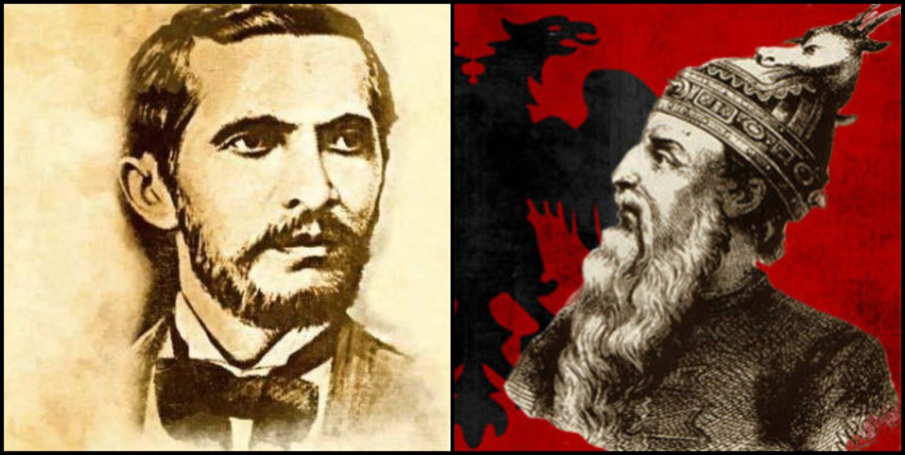

Pershkrimi i vepres
"Istori e Skënderbeut" e Naim Frashërit është një poemë epike e shkruar në vargje, e cila përshkruan jetën dhe luftërat e Gjergj Kastriotit Skënderbeut kundër Perandorisë Osmane. Përmes një gjuhe të fuqishme dhe patriotike, vepra e paraqet Skënderbeun si një hero të madh dhe simbol të lirisë kombëtare, duke synuar të ngjallë ndjenjat e krenarisë dhe atdhedashurisë te shqiptarët. E botuar në vitin 1898, kjo vepër ka një rëndësi të madhe për Rilindjen Kombëtare Shqiptare, pasi jo vetëm që forcoi identitetin kombëtar, por edhe ndihmoi në zhvillimin e gjuhës shqipe dhe në kultivimin e vetëdijes historike të popullit shqiptar.

Rendesia historike
- Rilindja Kombëtare Shqiptare Vepra është shkruar në një kohë kur shqiptarët po luftonin për identitetin e tyre kombëtar. Ajo synonte të forconte ndjenjat patriotike dhe të frymëzonte shqiptarët për pavarësi.
- Kultivimi i gjuhës shqipeNë një periudhë kur gjuha shqipe ende nuk kishte një standard të njësuar, vepra e Naimit ndihmoi në zhvillimin dhe pasurimin e saj.
- Mitizimi i Skënderbeut: Naimi e paraqet Skënderbeun si një figurë pothuajse hyjnore, duke ndikuar kështu në perceptimin e tij në kulturën shqiptare si një hero i pakrahasueshëm.
- Ndikimi në brezat e ardhshëm Përmes kësaj vepre, breza të tërë shqiptarësh u edukuan me ndjenjën e krenarisë kombëtare dhe me respektin për të kaluarën historike.